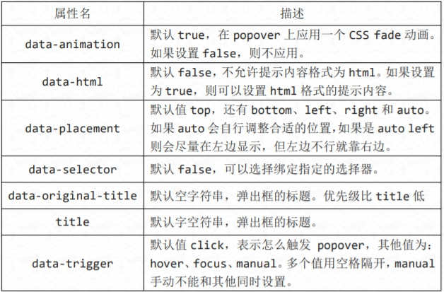
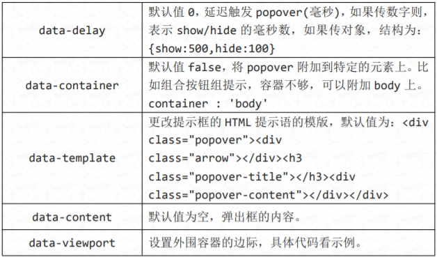

弹出框即点击一个元素弹出一个包含标题和内容的容器。
//基本用法
<button class="btn btn-lg btn-danger" type="button" data-toggle="popover" title="弹出框" data-content="这是一个弹出框插件">点击弹出/隐藏弹出框</button>
//JavaScript 初始化
$('button').popover();
弹出框插件有很多属性来配置提示的显示，具体如下：
 $('button').popover({
container : 'body',
viewport : {
selector : '#view',
padding : 10,
}
});
通过 JavaScript 执行的方法有四个。
//显示
$('button').popover('show');
//隐藏
$('button').popover('hide');
//反转显示和隐藏
$('button').popover('toggle');
//隐藏并销毁
$('button').popover('destroy');
Popover 插件中事件有四种。
| 事件类型 | 描述 |
|---|---|
| show.bs.popover | 在调用 show 方法时触发 |
| shown.bs.popover | 在显示整个弹窗时时触发 |
| hide.bs.popover | 在调用 hide 方法时触发 |
| hidden.bs.popover | 在完全关闭整个弹出时触发 |
//事件，其他雷同
$('button').on('show.bs.tab', function () {
alert('调用 show 方法时触发！');
});
警告框即为点击小时的信息框。
//基本实例
<div class="alert alert-warning">
<button class="close" type="button" data-dismiss="alert">
<span>×</span>
</button>
<p>警告：您的浏览器不支持！</p>
</div>
//添加淡入淡出效果
<div class="alert alert-warning fade in">
如果用 JavaScript，可以代替 data-dismiss="alert"
//JavaScript 方法
$('.close').on('click', function () {
$('#alert').alert('close');
})
Alert 插件中事件有两种。
| 事件类型 描述 | |
|---|---|
| close.bs.alert | 当 close 方法被调用后立即触发 |
| closed.bs.alert | 当警告框被完全关闭后立即触发 |
//事件，其他雷同
$('#alert').on('close.bs.alert', function () {
alert('当 close 方法被触发时调用！');
});